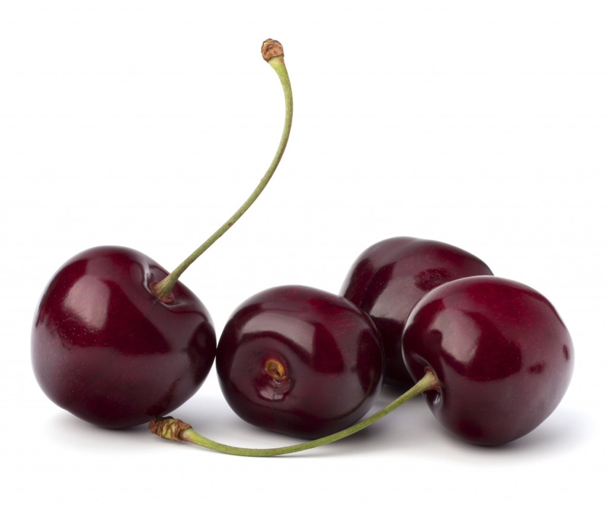
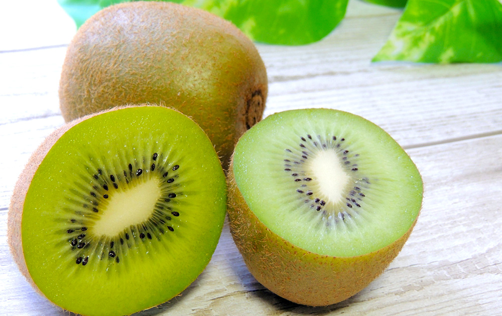

<!DOCTYPE html>
<html lang="ja"></html>
<head>
    <meta charset="utf-8">
    <link href="css/style.css" rel="stylesheet">
    <title>
        fruvege
    </title>

</head>

    <body>
        <header>
            <div class="header_box">
                <h1><a href="index.html">  
                    
                </a></h1>
                        <nav>
                            <ul>
                                <li><a href="index.html">ホーム</a></li>
                                <li><a href="fruit.html">フルーツ</a></li>
                                <li><a href="vegetable.html">vegetableとは</a></li>
                                <li><a href="about.html">fruvegeとは</a></li>
                            </ul>
                        </nav>
            </div>
        </header>
                <!--ヘッダーここまで-->
        <main>
                <section class="stream">
                    
                        <h3>人参<br>carrot</h3>
                            <p>ゆずが突然変異したもの。表面は黄色く皮はあつい。グレープフルーツやレモンに近い味。</p>
                </section>
                    
                <section class="stream">
                    
                        <h3>大根<br>bingcherry</h3>
                            <p>アメリカ西海岸で採れるさくらんぼ。色が濃く身が締まっているのが特徴です。</p>
                </section>

                <section class="stream">
                    
                        <h3>キウイフルーツ<br>kiwifruit</h3>
                        <p>マタタビかの植物の果実甘みと爽やかな酸味が特徴でビタミンCを豊富に含みます。</p>
                </section>
        </main>
                <!--mainここまで-->


        <footer>
            <div class="footer_box">
                <p>fresh fruits and vegetables</p>
                    &copy;2023 fruvege Inc.
            </div>
        </footer>
        <!--フッターここまで-->
    </body>
</html>